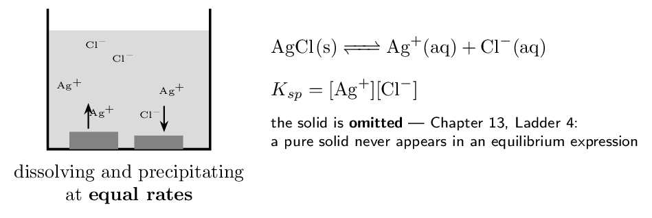
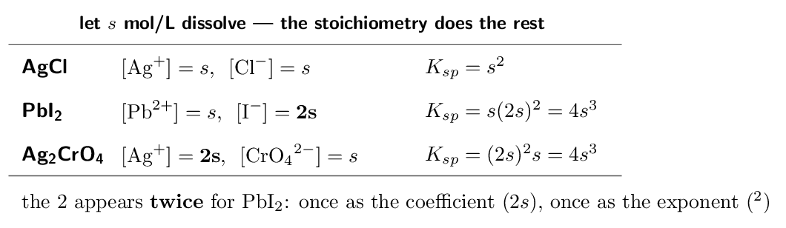
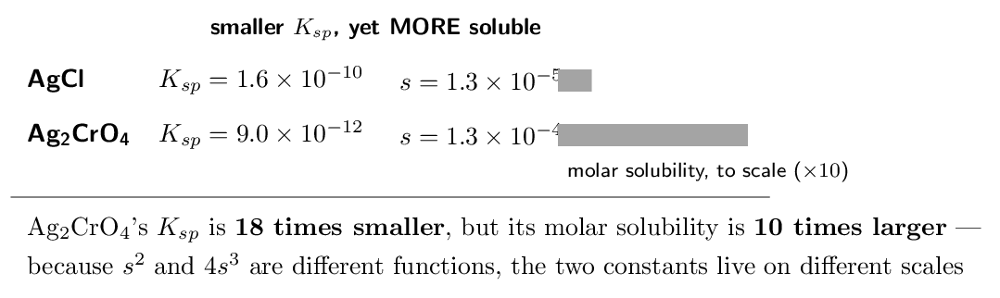
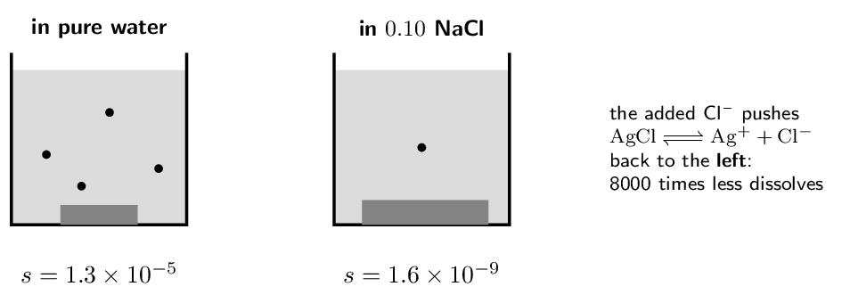
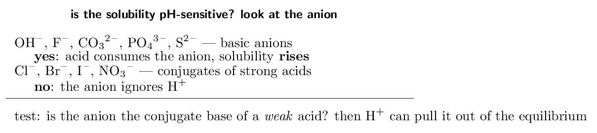
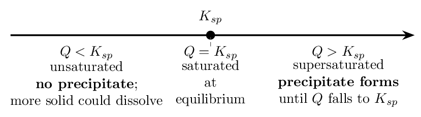
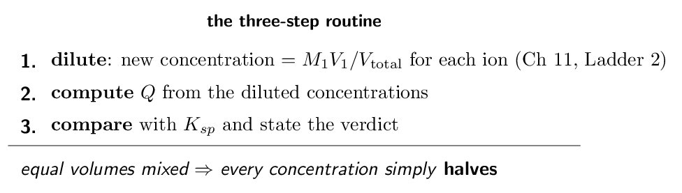
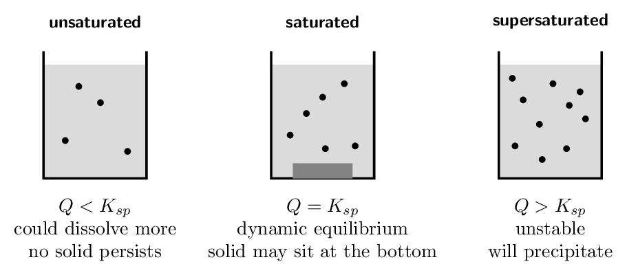

Each skill is a ladder: a fully worked example in the solid-framed box, then four YOUR TURN questions in the dashed box — same skill, new numbers, no help. Work all four before checking the gray check: line; a tracker tick needs all four right first time. A ten-question mixed set follows Ladder 9.
What is in and what is out — checked against the CED itself. §16.1 (\(K_{sp}\), molar solubility, the common-ion effect, pH and solubility) is fully assessed: CED topics 7.11, 7.12 and 8.11. From §16.2, predicting whether a precipitate forms by comparing \(Q\) with \(K_{sp}\) is assessed — it is Chapter 13's \(Q\) machinery applied to dissolving. The rest of §16.2 (selective precipitation schemes, qualitative analysis) and all of §16.3 (complex ions) do not appear anywhere in the CED and are not treated here. What you must bring with you. Chapter 13, again. A \(K_{sp}\) problem is an equilibrium problem where the ICE table is so simple it barely deserves the name — the initial concentrations are zero and everything is written in one unknown. If heterogeneous equilibria (Chapter 13, Ladder 4) and \(Q\) versus \(K\) (Ladder 6) are solid, this chapter is two ideas and some algebra. The one idea underneath everything. A “saturated” solution is not a solution where dissolving has stopped — it is a dynamic equilibrium where dissolving and precipitating run at equal rates, and \(K_{sp}\) is just the equilibrium constant for it.Ladder 1 • The dissolution equilibrium and \(K_{sp}\)
ZUM §16.1Drop solid \(\ce{AgCl}\) into water. A little dissolves, then the solution saturates — and from that moment ions leave the crystal exactly as fast as they return to it.

- \(\ce{AgBr}\) \([\ce{Ag+}][\ce{Br-}]\)
- \(\ce{CaF2}\) \([\ce{Ca^2+}][\ce{F-}]^{2}\)
- \(\ce{Ag2CrO4}\) \([\ce{Ag+}]^{2}[\ce{CrO4^2-}]\)
- Why does the solid not appear in the expression?
pure solids are omitted
(a) \([\ce{Ag+}][\ce{Br-}]\) (b) \([\ce{Ca^2+}][\ce{F-}]^{2}\) (c) \([\ce{Ag+}]^{2}[\ce{CrO4^2-}]\) (d) pure solids are omitted
Ladder 2 • Molar solubility — one unknown does everything
ZUM §16.1 Molar solubility, \(s\), is the number of moles of the solid that dissolve per litre of saturated solution. Every ion concentration is a multiple of it.
Each dissolved formula unit gives one \(\ce{Ag+}\) and one \(\ce{Cl-}\): \[ [\ce{Ag+}] = [\ce{Cl-}] = s = 1.3e-5 \] \[ K_{sp} = s^{2} = (1.3e-5)^{2} = \mathbf{1.7e-10} \]
(b) The molar solubility of \(\ce{PbI2}\) is 1.5e-3 M. Find \(K_{sp}\).Here \([\ce{Pb^2+}] = s\) and \([\ce{I-}] = 2s = 3.0e-3\): \[ K_{sp} = s(2s)^{2} = 4s^{3} = 4(1.5e-3)^{3} = 4 \times 3.375e-9 = \mathbf{1.4e-8} \]
Check the setup before the arithmetic. The commonest wrong answer here is \(s \times (2s)\) without the square, or \(s \times s^{2}\) without the doubling. Write the two ion concentrations explicitly first — \(s\) and \(2s\) — then substitute into the \(K_{sp}\) expression you wrote in Ladder 1. Setup first, numbers second. Where these measurements come from. Evaporate a litre of the saturated solution and weigh what is left, or measure the conductivity, or use a spectrometer — molar solubility is an experimental quantity, and \(K_{sp}\) tables are built from exactly this calculation.- The molar solubility of \(\ce{AgBr}\) is 7.1e-7 M.
Find \(K_{sp}\).
- The molar solubility of \(\ce{PbF2}\) is 2.0e-3 M.
Find \(K_{sp}\).
- For \(\ce{CaF2}\) dissolving with molar solubility \(s\), give
\([\ce{Ca^2+}]\) and \([\ce{F-}]\) in terms of \(s\).
\(s\) and \(2s\)
- In the \(\ce{PbF2}\) calculation, why is the fluoride concentration
both doubled and squared? stoichiometry doubles it; the mass-action law squares it
(a) 5.0e-13 (b) 3.2e-8 (c) \(s\) and \(2s\) (d) stoichiometry doubles it; the mass-action law squares it
Ladder 3 • From \(K_{sp}\) to solubility
ZUM §16.1The reverse direction: given the tabulated constant, how much actually dissolves?
1:1 salt, so \(K_{sp} = s^{2}\): \[ s = \sqrt{1.5e-9} = \mathbf{3.9e-5\,\mathrm{M}} \]
(b) \(K_{sp}(\ce{CaF2}) = 4.0e-11\). Find the molar solubility.1:2 salt, so \(K_{sp} = 4s^{3}\): \[ s^{3} = \frac{4.0e-11}{4} = 1.0e-11 \qquad s = \sqrt[3]{1.0e-11} = \mathbf{2.2e-4\,\mathrm{M}} \]
The no-calculator cube root. \(1.0e-11 = 10e-12\), and \(\sqrt[3]{10e-12} = \sqrt[3]{10} \times 10^{-4} \approx 2.2 \times 10^{-4}\). Rewriting so the exponent is a multiple of 3 is the whole trick, and MCQ items are built to allow it. Convert to grams if asked. For \(\ce{BaSO4}\) (\(M = 233.4\,\mathrm{g/mol}\)): \[ 3.9e-5 \times 233.4 \approx 9.0e-3\,\mathrm{g/L} \] — about nine milligrams dissolving in a litre, which is why barium sulfate can be swallowed for X-ray imaging even though barium ion is toxic: the \(K_{sp}\) keeps almost all of it solid. And note which direction is which. Ladder 2 went measurement \(\to\) constant. This ladder goes constant \(\to\) prediction. The exam asks both, in both stoichiometries — four variants of one skill.- A 1:1 salt has \(K_{sp} = 4.0e-12\). Find its molar
solubility.
- A 1:2 salt \(\ce{MX2}\) has \(K_{sp} = 3.2e-11\). Find its
molar solubility.
- For the salt in (a), find \([\ce{M+}]\) in the saturated
solution.
- Which algebra shape — \(s^{2}\) or \(4s^{3}\) — goes with which
formula type, and what decides it? 1:1 gives \(s^{2}\); 1:2 gives \(4s^{3}\) — the formula's stoichiometry
(a) 2.0e-6 M (b) 2.0e-4 M (c) 2.0e-6 M (d) 1:1 gives \(s^{2}\); 1:2 gives \(4s^{3}\) — the formula's stoichiometry
Ladder 4 • Comparing solubilities — the trap in the tables
ZUM §16.1“Which salt is more soluble?” sounds like “which \(K_{sp}\) is bigger?” — and that is only true when the formulas have the same shape.

The chromate is ten times more soluble despite a \(K_{sp}\) eighteen times smaller. A bare comparison of the constants gives the wrong answer here, which is precisely why exam writers love this pairing.
Why the inversion happens. For a 1:1 salt \(s\) scales as \(K_{sp}^{1/2}\); for a 2:1 salt it scales as \(K_{sp}^{1/3}\). A cube root climbs much faster than a square root at these tiny values, so a 2:1 salt squeezes more dissolution out of a smaller constant. You do not need that sentence on the exam — you need the habit it protects: different shapes, do the arithmetic.- Rank \(\ce{AgCl}\) (\(K_{sp} = 1.6e-10\)), \(\ce{AgBr}\)
(\(5.0e-13\)), \(\ce{AgI}\) (\(1.5e-16\)) by solubility.
Justify the shortcut. \(\ce{AgCl}\) \(>\) \(\ce{AgBr}\) \(>\) \(\ce{AgI}\) — same type
- May you rank \(\ce{BaSO4}\) (\(1.5e-9\)) against \(\ce{CaF2}\)
(\(4.0e-11\)) by comparing the constants? Why or why not?
no — different types
- Compute both molar solubilities from question 2 and give the
ranking. \(\ce{CaF2}\) (\(2.2e-4\)) \(>\) \(\ce{BaSO4}\) (\(3.9e-5\))
- A student concludes \(\ce{Ag2CrO4}\) is less soluble than \(\ce{AgCl}\)
“because its \(K_{sp}\) is smaller”. What went wrong?
compared constants across formula types
(a) \(\ce{AgCl}\) \(>\) \(\ce{AgBr}\) \(>\) \(\ce{AgI}\) — same type (b) no — different types (c) \(\ce{CaF2}\) (\(2.2e-4\)) \(>\) \(\ce{BaSO4}\) (\(3.9e-5\)) (d) compared constants across formula types
Ladder 5 • The common-ion effect
ZUM §16.1Dissolve \(\ce{AgCl}\) not in pure water but in salt water — water that already contains \(\ce{Cl-}\). Le Ch\^atelier says the equilibrium is pushed back toward the solid, and the arithmetic says by how much.

- In which does \(\ce{BaSO4}\) dissolve more: pure water or
0.10 M \(\ce{Na2SO4}\)? Explain with
Le Ch\^atelier. pure water — added sulfate pushes left
- Find the molar solubility of \(\ce{BaSO4}\)
(\(K_{sp} = 1.5e-9\)) in 0.10 M \(\ce{Na2SO4}\).
- Find the molar solubility of \(\ce{AgBr}\)
(\(K_{sp} = 5.0e-13\)) in 0.010 M \(\ce{NaBr}\).
- Does the common ion change \(K_{sp}\)? Explain.
no — only temperature changes \(K_{sp}\)
(a) pure water — added sulfate pushes left (b) 1.5e-8 M (c) 5.0e-11 M (d) no — only temperature changes \(K_{sp}\)
Ladder 6 • pH and solubility — qualitative by decree
ZUM §16.1Some salts dissolve better in acid. Which ones, and why, is assessed; how much better is explicitly not.
CED topic 8.11's exclusion: “Computations of solubility as a function of pH will not be assessed on the AP Exam.” What is assessed is the qualitative call — identifying whether a salt's solubility is pH-sensitive and which way it moves, argued through Le Ch\^atelier. That is exactly what this ladder practises, and no more.

- Is \(\ce{CaF2}\) more soluble in acid than in water? Explain.
yes — \(\ce{F-}\) is a weak-acid conjugate
- Is \(\ce{AgBr}\) more soluble in acid than in water? Explain.
no — \(\ce{Br-}\) is a strong-acid conjugate
- Write the reaction by which \(\ce{H+}\) increases the solubility of
\(\ce{Mg(OH)2}\). \(\ce{H+ + OH- -> H2O}\)
- What single question about the anion decides pH sensitivity?
is it the conjugate base of a weak acid?
(a) yes — \(\ce{F-}\) is a weak-acid conjugate (b) no — \(\ce{Br-}\) is a strong-acid conjugate (c) \(\ce{H+ + OH- -> H2O}\) (d) is it the conjugate base of a weak acid?
Ladder 7 • \(Q\) versus \(K_{sp}\) — will a precipitate form?
ZUM §16.2Chapter 13's reaction quotient, pointed at dissolution. Compute the ion product from the concentrations you actually have and compare it with \(K_{sp}\).

- \([\ce{Ba^2+}] = 1.0e-5\) and \([\ce{SO4^2-}] =
1.0e-5\). Precipitate? \(Q = 1.0e-10\), no
- \([\ce{Ba^2+}] = 1.0e-4\) and \([\ce{SO4^2-}] =
1.0e-4\). Precipitate? \(Q = 1.0e-8\), yes
- For \(\ce{PbI2}\) (\(K_{sp} = 1.4e-8\)):
\([\ce{Pb^2+}] = 1.0e-5\), \([\ce{I-}] = 1.0e-3\).
Precipitate? (Mind the exponent.) \(Q = 1.0e-11\), no
- What physically happens, and to which quantity, when
\(Q > K_{sp}\)? ions leave solution as solid until \(Q\) falls to \(K_{sp}\)
(a) \(Q = 1.0e-10\), no (b) \(Q = 1.0e-8\), yes (c) \(Q = 1.0e-11\), no (d) ions leave solution as solid until \(Q\) falls to \(K_{sp}\)
Ladder 8 • The mixing problem
ZUM §16.2The exam's favourite disguise for Ladder 7: two solutions are poured together. Mixing dilutes both before any chemistry happens, and forgetting the dilution is the built-in trap.

- Equal volumes of 2.0e-3 M \(\ce{Pb(NO3)2}\) and
2.0e-3 M \(\ce{KI}\) are mixed. Give the diluted
\([\ce{Pb^2+}]\) and \([\ce{I-}]\). 1.0e-3 each
- Compute \(Q\) for \(\ce{PbI2}\) from those diluted values.
\(Q = 1.0e-9\)
- \(K_{sp}(\ce{PbI2}) = 1.4e-8\). Does a precipitate form?
no — \(Q < K_{sp}\)
- Why must the dilution come before the \(Q\) calculation?
mixing changes the concentrations \(Q\) must be computed from
(a) 1.0e-3 each (b) \(Q = 1.0e-9\) (c) no — \(Q < K_{sp}\) (d) mixing changes the concentrations \(Q\) must be computed from
Ladder 9 • Reading and representing saturation
ZUM §16.1–16.2CED 7.8's “representations” skill, applied to solubility: particulate diagrams, and the vocabulary of saturation, said precisely.

- A saturated \(\ce{AgCl}\) solution sits over excess solid. Are
dissolution and precipitation still occurring? Explain.
yes — at equal rates
- In a particulate diagram of saturated \(\ce{CaF2}\) solution, what
ratio of free ions must appear? two \(\ce{F-}\) per \(\ce{Ca^2+}\)
- Half the water in a saturated \(\ce{BaSO4}\) solution (no excess
solid) evaporates. What happens, in \(Q\)-versus-\(K_{sp}\)
language? concentrations double, \(Q > K_{sp}\), precipitate forms
- Why is drawing dissolved “\(\ce{NaCl}\) units” in a particulate
diagram wrong? dissolved ionic compounds exist as separate ions
(a) yes — at equal rates (b) two \(\ce{F-}\) per \(\ce{Ca^2+}\) (c) concentrations double, \(Q > K_{sp}\), precipitate forms (d) dissolved ionic compounds exist as separate ions
Mixed set • ten questions, no labels
Every question so far told you which ladder it belonged to. These ten do not — deciding which skill a solubility question wants is most of the difficulty on the real exam.
- Write the \(K_{sp}\) expression for \(\ce{Fe(OH)3}\).
\([\ce{Fe^3+}][\ce{OH-}]^{3}\)
- A 1:1 salt has molar solubility 2.0e-4 M. Find
\(K_{sp}\).
- \(K_{sp}(\ce{MX2}) = 4.0e-9\). Find the molar solubility.
- Salt A (1:1) has \(K_{sp} = 1.0e-10\); salt B (1:2) has
\(K_{sp} = 1.0e-11\). May you conclude A is more soluble?
no — different formula types
- Is \(\ce{SrCO3}\) more soluble at pH 4 than at pH 7? One sentence.
yes — carbonate is a weak-acid conjugate
(a) \([\ce{Fe^3+}][\ce{OH-}]^{3}\) (b) 4.0e-8 (c) 1.0e-3 M (d) no — different formula types (e) yes — carbonate is a weak-acid conjugate
- Find the molar solubility of \(\ce{AgCl}\)
(\(K_{sp} = 1.6e-10\)) in 0.20 M \(\ce{KCl}\).
- \([\ce{Ca^2+}] = 2.0e-4\) and \([\ce{F-}] = 2.0e-4\)
in a mixture; \(K_{sp}(\ce{CaF2}) = 4.0e-11\). Precipitate?
\(Q = 8.0e-12\), no
- Equal volumes of 2.0e-4 M \(\ce{AgNO3}\) and
2.0e-4 M \(\ce{NaBr}\) are mixed;
\(K_{sp}(\ce{AgBr}) = 5.0e-13\). Precipitate?
\(Q = 1.0e-8\), yes
- Adding solid \(\ce{NaCl}\) to a saturated \(\ce{AgCl}\) solution makes
more \(\ce{AgCl}\) precipitate. Explain in one sentence.
common ion pushes the equilibrium left
- A saturated solution of \(\ce{Ag2CrO4}\) has \([\ce{CrO4^2-}] =
1.3e-4\). What is \([\ce{Ag+}]\), and what \(K_{sp}\) does
this give? 2.6e-4; \(K_{sp} \approx 8.8e-12\)
(a) 8.0e-10 M (b) \(Q = 8.0e-12\), no (c) \(Q = 1.0e-8\), yes (d) common ion pushes the equilibrium left (e) 2.6e-4; \(K_{sp} \approx 8.8e-12\)
Mastery tracker
Tick a row only if all four YOUR TURN questions were right on the first attempt. Every row is assessed — the off-CED parts of this chapter (selective precipitation, qualitative analysis, complex ions) were cut rather than included, and Ladder 6 is deliberately qualitative because the CED excludes the computation.
| First try? | Skill | Ladder | If not, re-read… |
|---|---|---|---|
| \(\square\) | writing \(K_{sp}\) expressions | 1 | no denominator |
| \(\square\) | solubility \(\to\) \(K_{sp}\) | 2 | doubled AND squared |
| \(\square\) | \(K_{sp}\) \(\to\) solubility | 3 | \(s^{2}\) or \(4s^{3}\) |
| \(\square\) | comparing solubilities | 4 | same type, or compute |
| \(\square\) | the common-ion effect | 5 | give one ion a head start |
| \(\square\) | pH and solubility | 6 | weak-acid conjugate anions |
| \(\square\) | \(Q\) versus \(K_{sp}\) | 7 | the verdict is a comparison |
| \(\square\) | the mixing problem | 8 | dilute first, always |
| \(\square\) | representing saturation | 9 | dynamic, ions, ratio |
| \(\square\) | mixed set (8 of 10) | — | whichever it exposed |
9/9 and the mixed set: solubility equilibria are banked — and note how little was genuinely new. Ladders 1 and 9 were Chapter 13 restated; 5 was the small-\(x\) approximation; 7 and 8 were \(Q\) versus \(K\). This chapter is a reunion, not a new subject.
6–8: if the misses are Ladders 2–4, the issue is the \(s\)/\(2s\)/\(4s^{3}\) algebra — redo those three in sequence, writing the ion concentrations explicitly every time. If the misses are 7–8, go back to Chapter 13 Ladder 6, because \(Q\) reasoning is upstream of both.
5 or fewer: re-read Chapter 13 Ladders 4 and 6 before touching this chapter again — every difficulty here is one of those two in disguise.